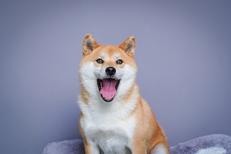
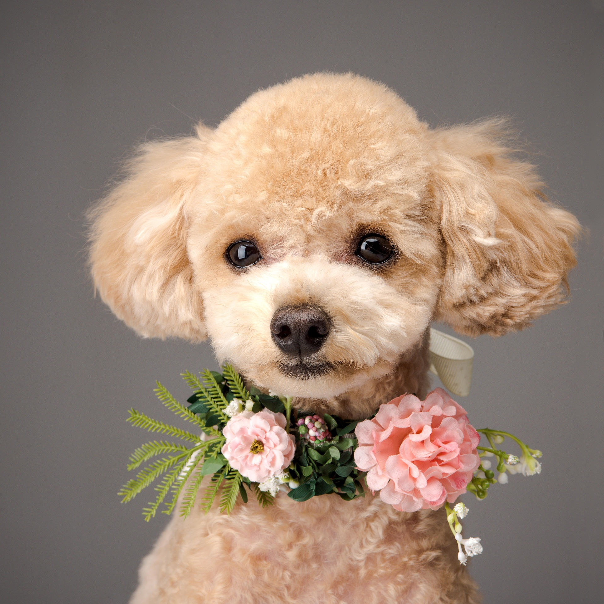
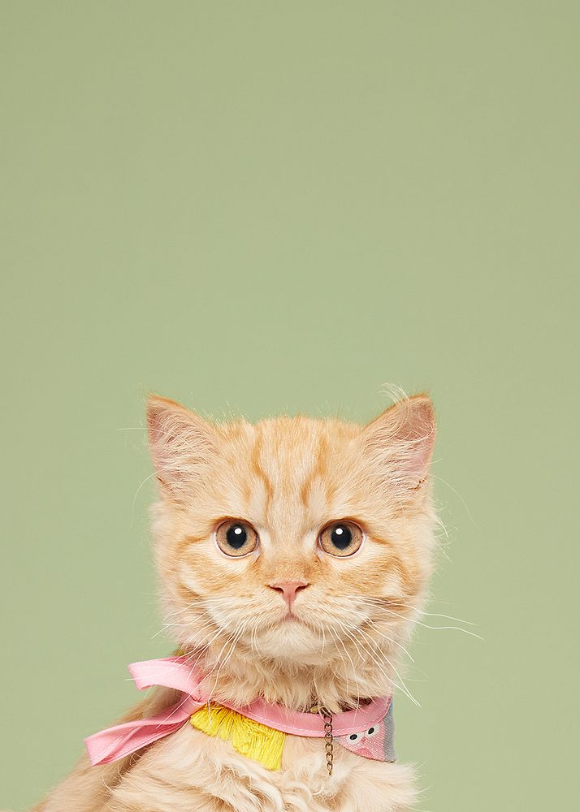
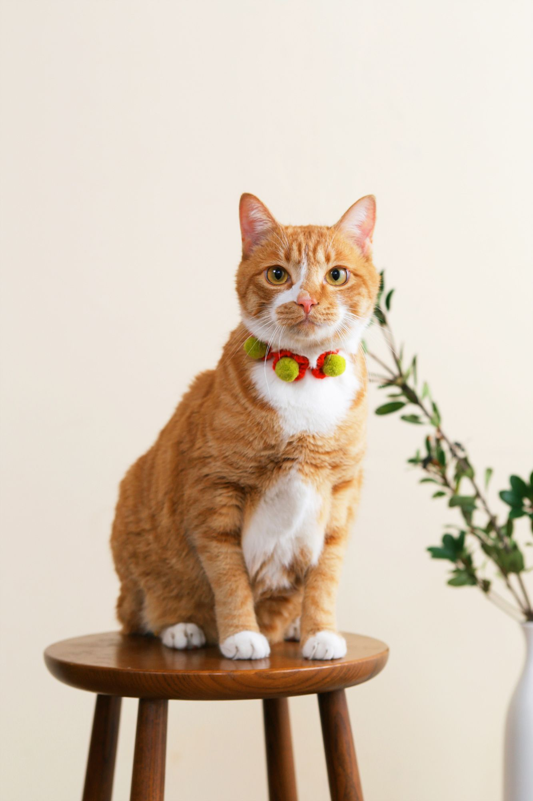
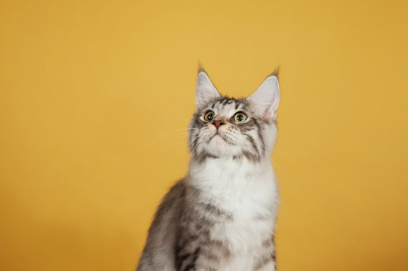

Dogs vs Cats
This is the most hardest concerns in the world.
Starts with the dogs !
Actually I have a little bit mroe interest than cats because I am living with a dog that sleeping now..!


Look how cute are them ! They normally acts so gentle and obedient to their family. For cats, the house would be fill with cat's hair but dods are not much as them. Enjoy walking together and travel together make people have precious memories!
However Cats are so charming !
Their eyes are so different for each cat, and it is so beautiful. Sometimes they are acting so unique like sitting inside a box, plastic bags. It makes their family laugh and give happiness.



Most of them, they do not need to walk around but likes to see outside on the higest area in the house. Both cats and dogs are required to have lots of responsibility but for that side, cats are more easy to grow sometimes I guess.
Oct 29 2020
by myself.